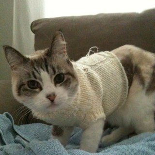

Pochi the Cat

Introduction
Pochi was adopted from an animal shelter and now resides in Seattle, WA,
where she runs a small but successful web page design business exclusively for cat clients.
Profile
- favorite food-smoked salmon
- hobbies-watching fishing on ESPN, snaking on garden flowers, monitoring the aprtment parking lot
- hidden talent-Karaoke
Links
Last updated on 24 June 2013 by Pochi the Cat